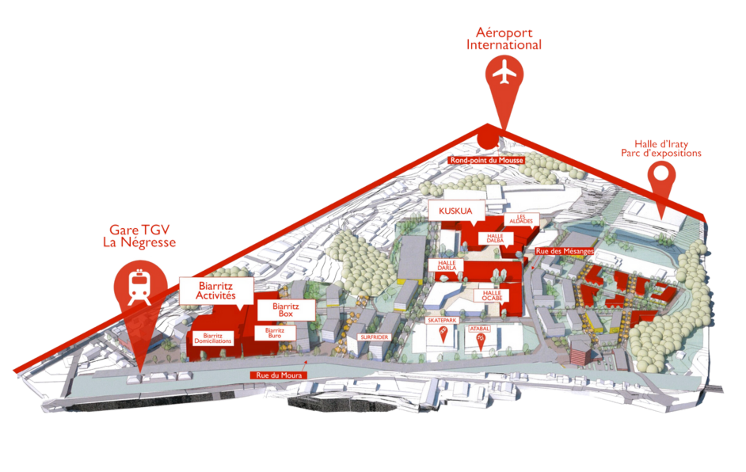

Un village qui vibre
Ce qui n'était qu'un quartier s'est transformé en un lieu dynamique regroupant commerces, ateliers, coworking et bien plus.
-
1200+Acteurs
-
5000+Visiteurs / jour
-
100+Commerces
-
20 ansD'existence
Notre histoire
-
2005 Naissance du Village
Le quartier d'Iraty entame sa transformation en zone d'activités, portée par la SEBI.
-
2010 La Halle d'Iraty
Inauguration de la Halle d'Iraty, espace congrès devenu moteur du quartier.
-
2015 100 acteurs
Le Village franchit le cap des 100 acteurs : commerces, artisans, services et restaurants.
-
2024 Association Biarritz Iraty
Création de l'association pour fédérer les 1 200 acteurs et accélérer le développement.
La mixité
Une valeur essentielle du Village
Mêler artisans, créateurs, TPE, PME, culture, prestataires de services, start-ups et commerces de petites et moyennes surfaces fait partie de notre vision de l'aménagement du VILLAGE Iraty-Biarritz. C'est aujourd'hui plus vrai que jamais.
Avec le désir d'encourager l'inventivité, l'innovation et la réussite locale, le Village permet à chacun de s'installer. La Société d'exploitation de Biarritz Iraty (SEBI) poursuit sa politique de loyer modéré pour favoriser et agréger la microéconomie locale.
Le VIB offre un lieu marchand différencié, où chacun trouve une offre locale, une sélection de produits et un accueil chaleureux dans un véritable esprit de village.
Comment venir
-
Aéroport
Biarritz-Pays Basque à 5 min
-
Gare TGV
Biarritz à 2 min
-
Autoroute
A63 sortie Biarritz
-
Bus
Lignes C, 5, 8, 10, 12

Rejoignez-nous
Prêt à faire partie de l'aventure ?
Des espaces professionnels accessibles dans la zone la plus dynamique de BIARRITZ.